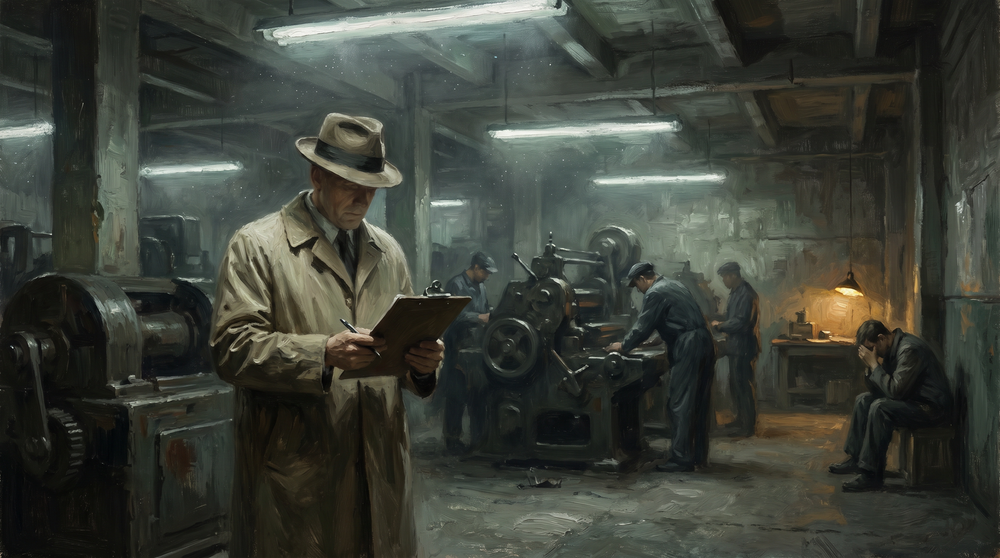

Надзорный, который ничего не видит
Инспекция без первочувства — это администрирование прошлого
Практика · 11 мин чтения

AFM присылает письмо. Семнадцать страниц. Вопросы о внутренних процедурах, документации по корпоративному управлению, руководстве по комплаенсу, фиксации процедур рассмотрения жалоб, протоколах конфликта интересов. Финансовый консультант, получивший это письмо, ведёт с женой небольшую практику, лично знает двести своих клиентов, за двадцать лет не навредил ни одному и теперь тратит шесть недель на формирование досье, которое никто никогда не прочтёт. В двух кварталах отсюда расположено бюро, систематически продающее некачественные ипотечные кредиты, заставляющее жалобы исчезать внутри компании и располагающее отделом комплаенса, который блестяще ведёт переписку с AFM. У этого бюро никогда не было проблем с регулятором.
Это не случайность. Так работает система.
Чем надзорный орган был предназначен быть
Инспектор, прежде входивший на завод, директор банка, внезапно посещавший филиал, чиновник, без предупреждения заходивший на кухню ресторана, — эти люди делали нечто простое и незаменимое. Они входили. Они смотрели. Они чувствовали, у кого всё действительно в порядке, а кто разыгрывает спектакль. Они слышали по тону сотрудника, что что-то не так. Они видели по лицам то, чего не говорили книги.
Надзор был когда-то очевидцем. Человеком, который собственными глазами и собственным суждением устанавливал, совпадает ли реальность с тем, что заявляется. Это требовало людей с позвоночником, готовых делать выводы, осмеливающихся выносить суждения, которые могут быть оспорены.
Надзор превратился во что-то другое. В административную систему, проверяющую, есть ли документация. Зафиксированы ли процедуры. Сдана ли самооценка вовремя. Представлены ли планы по улучшению. Поступают ли аудиторские отчёты в соответствии с предписаниями. Надзор измеряет, правильны ли бумаги, а не то, в порядке ли реальность.
Как скандал приносит больше бумаг и меньше суждения
После каждого крупного скандала — «дело о надбавках», Vestia, национализация SNS, добыча газа в Гронингене, злоупотребления в учреждениях опеки для несовершеннолетних — всегда следует один и тот же ответ. Подаются парламентские запросы. Создаётся следственная комиссия. Комиссия устанавливает, что надзора было недостаточно. После этого надзор расширяется. Появляются новые требования к отчётности. Появляются новые критерии соответствия. Появляются дополнительные контрольные моменты, дополнительные сроки проверок, дополнительные обязательства по документированию.
И все довольны. Приняты решительные меры. Система улучшена. Политика показала, что относится к этому серьёзно.
Чего никто не говорит — следующий скандал не будет предотвращён этими дополнительными формами. Следующий скандал вырастает именно в тени комплаенс-суеты. Пока честное небольшое учреждение с трудом справляется с новыми требованиями к отчётности, умный крупный институт просто имеет отдел для их обработки. Этот крупный институт на бумаге всегда в порядке. Его сотрудники по комплаенсу точно знают, что хочет видеть регулятор, — своевременно предоставляют это и держат реальное положение дел подальше от тех, кто проверяет.
«Дело о надбавках» — самый горький тому пример. Налоговая служба надзирала за собой через внутренний контроль, отчёты, аудиты, письма с замечаниями — всё в соответствии с предписаниями. При этом систематически разрушала семьи с помощью алгоритма, использовавшего этническое происхождение как фактор риска. Всё было задокументировано. Ничего не было увидено.
Vestia и банки: паттерн повторяется
В случае с Vestia — жилищной корпорацией, спекулировавшей деривативами и в итоге потянувшей за собой весь сектор в санирование на пять миллиардов, — CFO, заключавший сделки, был совершенно невидим для регулятора. Centraal Fonds Volkshuisvesting проверял годовые отчёты, декларации о корпоративном управлении, отчёты совета. Портфель деривативов годами рос беспрепятственно — он значился в документах, но в формате, не вызывавшем тревоги у человека с суждением: просто таблица, сама по себе не выглядевшая тревожной, если смотреть только на таблицу.
Тот, кто прошёл бы по коридорам Vestia, почувствовал бы это. Сотрудники, которым нельзя было открыть рот. Культура одного человека, стоявшего за всем. Сделки с посредниками, о неправильности которых все знали, но за которые никто не нёс ответственности. Это видно, если смотреть. Это никогда не записано в годовом балансе.
С банками перед кризисом 2008 года было в точности так. Регуляторы всех причастных стран — DNB в Нидерландах, FSA в Великобритании, ФРС в Америке — имели доступ ко всем документам. Они их также читали. Показатели достаточности капитала на бумаге выглядели приемлемо, потому что модели расчёта рисков были одобрены теми же регуляторами. Никто не следовал своему внутреннему голосу. Никто не сказал: это не сходится, я чувствую, что здесь что-то фундаментально неверно. Никто не поставил своё суждение выше модели.
После кризиса пришли, разумеется, новые правила. Базель III. Требования к SIFI. Стресс-тесты. Больше отчётности, больше моделей, больше комплаенса. Следующая глава из дополнительной бумаги поверх проблемы, вызванной бумагой.
Регулятор утратил собственное первичное чутьё
Легко сказать, что регуляторы некомпетентны. Это не так. Люди в AFM, DNB, IGJ, NVWA, ILT, Инспекции образования — как правило, образованные, серьёзные люди, серьёзно относящиеся к своей работе. Проблема не в людях. Проблема в системе, которая их сформировала и ежедневно ими управляет.
Инспектор Инспекции образования посещает школу. У него есть протокол. Есть области качества, показатели, подкритерии, оценочные шкалы. Он беседует с руководством, заходит в несколько классов, смотрит результаты учеников, проверяет процедуру работы с детьми с особыми нуждами. Через два дня пишет отчёт. Отчёт указывает, соответствует ли школа по каждому критерию достаточно, хорошо или недостаточно. Отчёт честен — он соответствует тому, что инспектор видел.
Но он не увидел учительницу в шестом классе, которая три года не спит из-за своего класса, а руководство ничего с этим не делает. Не увидел директора, систематически отправляющего самых умных детей из самых трудных семей в специальное образование, чтобы улучшить свою среднюю оценку. Не увидел культуры страха, из-за которой никто ничего не говорит, когда объявлен визит.
Он этого не увидел, потому что не был подготовлен видеть это. Точнее: он видит это, потому что у него тоже есть первичное чутьё, но протокол не оставляет ему места это записать. Того, что не вписывается в критерий, не существует.
И вот здесь настоящая катастрофа: политическое давление за последние два десятилетия всё больше толкало регуляторов в сторону объективируемого, оспоримого, защищаемого. Каждое субъективное суждение оспаривалось. Каждая жалоба на инспектора, действовавшего "по ощущению", вела к корректировке протокола. Регулятор научился, что его собственное суждение опасно — не для общества, а для него самого.
Поэтому он обменял суждение на протокол. И теперь проверяет протоколы.
Честного малого предпринимателя укатывают в асфальт
Этот механизм работает как обратный фильтр. Честный малый предприниматель — физиотерапевт с одной практикой, детский сад с двумя площадками, бухгалтерская контора с десятью сотрудниками — не имеет отдела комплаенса. У него есть он сам. Каждое новое требование регулятора затрагивает его непосредственно: это его вечер, его выходной, его энергия.
Он всё делает правильно. Он никогда не ущемлял клиента. Но досье у него не всегда в порядке так, как хочет регулятор. Его политика конфиденциальности не в правильном формате. Его регламент рассмотрения жалоб не соответствует последней директиве. Его самооценка заполнена честно, а не стратегически. Он пишет, что реально делает, а не то, что выглядит как то, что он должен делать.
Эта честность стоит ему очков.
Крупное учреждение — страховая компания, крупная бухгалтерская контора, крупная сеть детских садов — имеет отдел. Тот отдел знает, что хочет видеть регулятор. Они это предоставляют. Досье безупречно. Реальность за ним не обязана совпадать с досье, потому что регулятор проверяет досье.
Вот катастрофа, которая ни в одной оценке надзора как таковая не называется: надзор защищает крупных игроков и вредит малым. Не потому что таково намерение. Потому что затраты на комплаенс регрессивны. Обязательство, стоящее крупному учреждению десять процентов накладных расходов, стоит малому предпринимателю его вечера.
А тот, чей вечер уходит на бумаги, которые никто не читает, имеет меньше времени для своих клиентов. Вот реальный ущерб: не мошенничество, а то, что хорошие люди придавлены, пока ловкие продолжают работать.
Самонадзор как институциональная шутка
Самое абсурдное изобретение в ландшафте надзора — это самооценка. Учреждение оценивает себя само. Заполняет, соответствует ли критериям. Анализирует собственные недостатки. Формулирует собственные точки улучшения. Отправляет это регулятору.
Регулятор это читает. И смотрит, полностью ли заполнена самооценка. Подана ли вовремя. Сформулированы ли точки улучшения по SMART.
Что регулятор не смотрит — правдива ли самооценка. Потому что для этого ему самому пришлось бы смотреть. А он больше этого не делает — или не регулярно, не там, где не нужно, а там, где нужно.
Учреждение, систематически ущемляющее клиентов, вполне способно предоставить безупречную самооценку. Оно ведь научилось представлять своё поведение в приемлемом виде. Этот навык применим к формам так же, как к клиентам. Учреждение, действительно хорошо обслуживающее клиентов, честно заполняет самооценку, называет свои недостатки и получает в награду повторную проверку.
Это не цинизм. Это структура.
Каким должен быть надзор
Работающий регулятор нуждается в трёх вещах. Небольшой масштаб: он должен знать учреждение прежде, чем оценивать его. Внезапное присутствие: он должен видеть то, что есть на самом деле, а не то, что разыгрывается. И полномочия для суждения: он должен иметь возможность сказать "здесь что-то не так", даже если досье в порядке.
Все три вещи политически недостижимы в нынешней системе. Они ведут к судебным искам. Они ведут к парламентским запросам о произволе. Они ведут к процедурам обжалования, которые ведут хорошо организованные учреждения, знающие свои правовые позиции.
Поэтому регулятор покупает собственный покой, ожидая, пока досье даст повод. Он ждёт жалобы. Ждёт, когда поступит сигнал. Ждёт, когда бумаги дадут повод. Тогда расследует. Тогда выносит суждение — с юридическим прикрытием.
Но нарушения, действительно причиняющие вред, никогда не вписываются в досье. Их никогда не сообщают те, кто от них больше всего страдает, — потому что не знают, как подать жалобу, или не осмеливаются, или не знают, что их ситуация достойна сообщения. Они никогда не появляются в бумагах, потому что учреждение, допускающее нарушения, само же эти бумаги и предоставляет.
Надзор, который общество считает, что имеет, существует на бумаге. В реальности — система, контролирующая себя сама, документирующая собственные недостатки и ожидающая, пока ущерб не вырастет до размера, достаточного для парламентских дебатов. Тогда цикл начинается заново: комиссия, отчёт, новые правила, больше бумаг, меньше суждения.
Это выпуск 4, статья 6. Она опирается на серию о законе бумажной индустрии (выпуск 4, статья 1) и о первичном чутье в профессиональной практике (выпуск 3, статья 9). Серия выходит на openvizier.org.